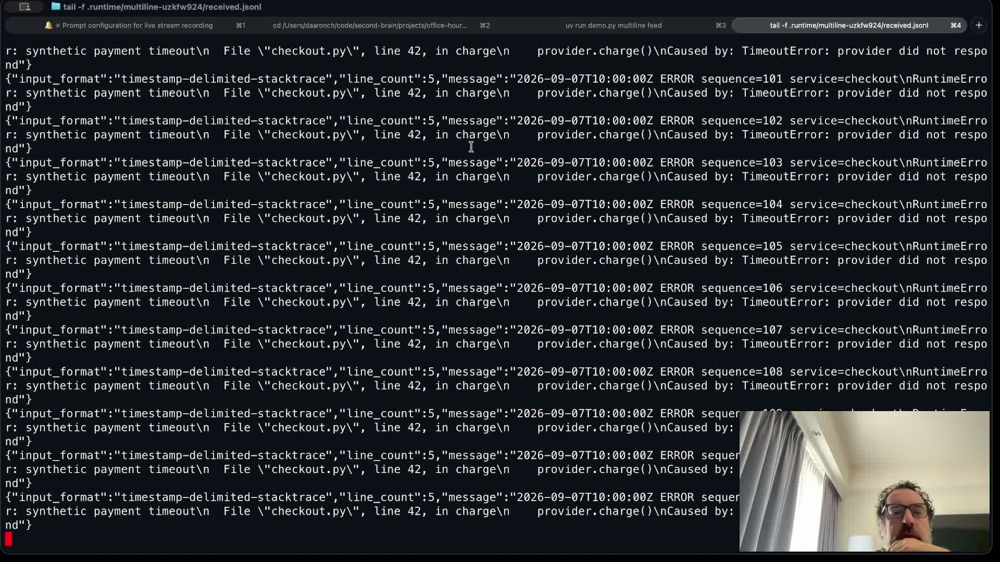
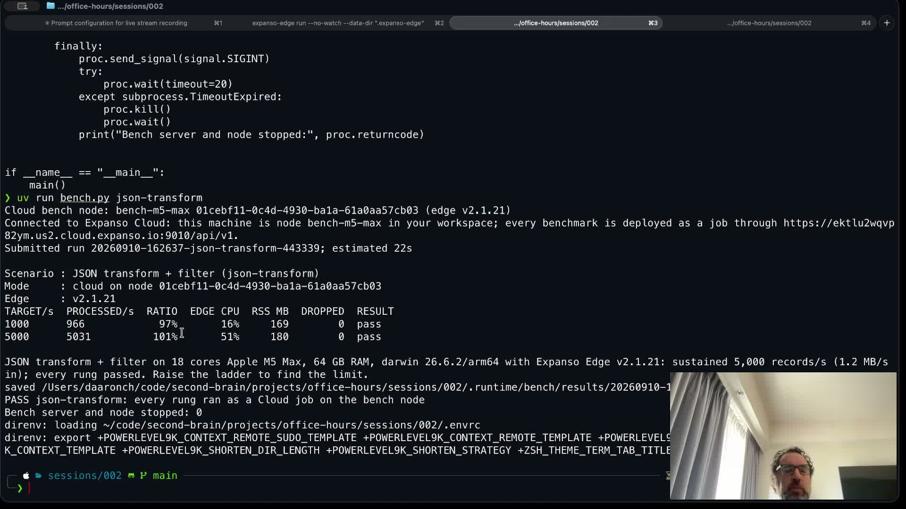

PIPELINE OFFICE HOURS / 10 SEPTEMBER 2026
Keep the result. Tighten the journey.
Two-video review, recording evidence, and a focused proposal for episode three.
Full 4K master missing.Local recording: 12.65 seconds. Recovered Twitch archive: 29:23 at 1080p60.
Review the source moments
Click a time to seek; press Play to watch. These are approximate editorial windows, not automatic cuts. Media stays local.
Episode 1 · 46:34 edited replay
Open timestamped edit map
Episode 2 · 29:23 live archive
Open timestamped edit map
Make the outcome readable

15:15 · The exception is fixture data. Freeze one record and highlight line_count: 5.
27:05 · A useful result, with a short-run qualification. Reserve space so the camera cannot cover output.Episode three: Cut log noise without losing the incident
One fixture. One prediction. One deliberate mistake. One verified recovery.
100 input events → 10 expected IDs
90 routine, 6 warnings, 2 errors, 2 slow requests. Keep an independent manifest of important IDs.
Break → 8 arrive. Repair → all 10.
Omit the slow-request rule, see two missing IDs, restore it through Cloud, replay into a fresh destination, and verify exact IDs and duplicates.
Proposed 22-minute stream. Fixture, verifier and episode-three assets still need implementation and rehearsal.
Complete evidence and editorial notes
Office Hours: recording check and next-episode review
Review date: September 10, 2026. Scope: verify the recording, review the first edited replay and the second live archive, and propose episode three. No edited export, OBS setting change, or Cloud run was made during this review.
Recording verdict
The full September 10 stream was not recorded locally by OBS. Its Twitch archive is available and has been downloaded.
The 4K recording configuration worked for the short test. It did not start recording automatically with the stream. I configured separate recording and streaming outputs earlier but did not enable Automatically record when streaming. Configuration verification was not proof that a full recording would be made.
The Twitch copy is a recovery source at 1080p. Re-encoding it at 4K will not recover native 4K detail. The log points to substantial rendering stalls, but does not establish which application or resource caused them.
Reviewed sources
- Episode one: YouTube edited replay, 46:34.494, downloaded at 1920 × 1080 / 30 fps. This is the edited version, not the original live master. Local frame and transcript review was used after Gemini preprocessing failed.
- Episode two: September 10 Twitch archive, 29:23.516, downloaded at 1920 × 1080 / 60 fps. The channel still labels it “Office Hours #0”; this report calls it episode two to match the repository's sequence.
- The first source is already edited and the second is a live archive. Differences in pacing should not be treated as a controlled comparison of presenter improvement.
Audio measurements
These are FFmpeg measurements of the downloaded files, not platform analytics or subjective listening scores.
Both files have headroom and are quiet overall. Level-match speech and control large changes in voice level before final loudness normalization. A practical editorial starting target is about −16 LUFS with a −1.5 dBTP ceiling, then listen on headphones and a phone speaker; this is a production choice, not a YouTube acceptance requirement. Do not simply add 8 dB throughout episode two: its peaks need limiting and quiet sections may contain room noise.
Video review
The strongest material is the moment a change produces a visible result. Episode one has a particularly useful live field-change demonstration; episode two has concrete binary and multiline examples, but spends too much of its shorter runtime finding output and repairing the environment. Preserve the conversational delivery and audience predictions. Reduce the number of unrelated lessons.
These are editorial review windows, not a frame-accurate EDL. Timecodes use each downloaded source timeline. Check speech and transition boundaries in an editor. Suggested targets: episode one 18–24 minutes plus optional extras; episode two 12–16 minutes plus a separate benchmark extra. Neither target is an exported or timed cut.
Episode 1: prioritized edit map
Episode 2: prioritized edit map
Pickups worth recording
- Episode two, multiline: “That exception is the synthetic log we are transporting. The output has line_count 5: the teaching point is that the five-line event stays together.” The frame at 15:15 and
sessions/002/simulate.py corroborate the payload; this does not by itself prove every event was retained.
- Episode two, receipt: identify the job version, fresh run directory and output from that run. If the archive cannot establish the link, label the displayed file a reference result.
- Episode two, benchmark: “This is a short test of this workload on this machine. It is not a production capacity limit or an isolated CPU-versus-disk experiment.”
- Episode one, schema: replace the uncertain dead-letter explanation with the exact observed outcome. Do not claim destination receipt from an empty stdout panel.
Presentation changes that matter
The sampled second-stream frames largely fill 16:9; the major issue is useful screen area, not a large persistent black border. Browser tabs and the debugging banner consume space. The low camera angle leaves much of the webcam inset showing ceiling/window and places the face near its bottom. Raise the camera to eye level, light the face, and reserve a camera area that cannot cover output. Episode one's framing is a better reference.
Use three prepared scenes: a brief presenter introduction, a large code view, and a result view with source and received records together. Enlarge the relevant predicate or record instead of showing an entire dashboard and expecting viewers to search it. Pause on the result long enough to read it. Keep chat on a separate device/window outside capture and take questions at chapter boundaries. Keep the node in a dedicated, labeled terminal so stopping a feed cannot accidentally stop the node.
Review method and limits
Both files were inspected through frames sampled every 30 seconds across their full timelines, selected full-resolution frames, local automatic transcription, and media/audio measurements. Episode two also has a successful Gemini 3.7 Flash static-video analysis. Episode one's Gemini processing failed across multiple inputs; no successful Gemini review is claimed for it. Automatic transcripts contained hallucinated repetition, so those passages were excluded and transcription was repeated with previous-text conditioning disabled. Transcripts are working evidence, not approved captions. This is not continuous frame-by-frame playback, a complete secret scan, or lip-sync certification. Model suggestions were checked and narrowed where they exceeded the evidence.
Proposed third episode
Working title: Cut log noise without losing the incident.
Audience: an operator who needs to reduce forwarded routine logs but cannot afford to hide known incidents. Promise: define which records matter, filter at the edge, and prove that the expected incident IDs arrived.
Use one fixed synthetic feed for the whole episode. A proposed fixture is 100 uniquely identified events: 90 routine events, six warnings, two errors, and two slow requests at ordinary severity. These are fixture-design counts, not measured results or a production savings claim. Preserve a separate expected-ID manifest before the pipeline runs.
The deliberate mistake removes the slow-request condition. Eight expected events should arrive and the two known slow-request IDs should be missing. Restore the condition, deploy a new version through Cloud, replay the same fixture into a fresh run-specific destination, and prove all ten expected IDs arrived. Verify exact IDs, no unexpected IDs, and duplicates as well as counts. Measure serialized bytes separately; a 90% reduction in record count is not necessarily a 90% byte reduction.
Proposed 22-minute run
What to build first
- Reuse the Cloud deployment and TCP feed/watcher pattern from
sessions/002/demo.py.
- Adapt the predicate in
vendor/benchmarking/scenarios/filter-90.yaml into the teaching pipeline. Its current reason mapping labels a warning without an error/5xx condition as slow; fix that classification before using it on screen.
- Add a deterministic fixture, independent expected-ID manifest, run IDs, separate output files, and a receipt verifier. Those episode-three assets do not exist yet.
- Make source, retained results, and missing expected IDs legible in one 16:9 presentation area. Show node logs only for diagnosis and Cloud state only when proving deployment/execution. Keep any presenter web UI localhost-only.
- Rehearse the exact intended failure and recovery. If a different failure occurs, identify it honestly and use a labeled saved result after a bounded diagnosis rather than treating it as the planned demonstration.
Two alternatives are schema-change/dead-letter recovery, which needs replay and duplicate handling that the current example lacks, and a controlled throughput comparison, which has more reusable code but gives the audience less immediate visual feedback. The filtering episode has the clearest single decision and visible failure.
Recording procedure for episode three
- Enable Automatically record when streaming. Decide whether recording should continue after streaming stops for an outro or pickup, and explicitly stop it afterward.
- Retain a 3840 × 2160 canvas and recording output, a separate hardware recording encoder, MKV, and a 1920 × 1080 streaming rescale. For predominantly terminal/browser teaching, rehearse 4K30 recording and 1080p30 streaming as a lower-load alternative to 60 fps. Do not assume that change alone fixes the measured rendering lag.
- Size the presentation windows to 16:9, select those exact windows in OBS, and fit each source. Check the source capture mode: application/display capture may include more than the intended window. Select a specific window or crop deliberately; preserve its aspect ratio rather than stretching it.
- Record a short rehearsal with the actual demo workload and both intended encoders active. Check OBS Stats, voice level, readability, frame pacing, and the resulting file with FFprobe. The earlier 13-second recording and separate stream did not test simultaneous streaming and recording.
- Before teaching, visibly confirm that both STREAM and REC timers are advancing. Keep an unobtrusive recording-status check in the presenter routine.
- At the end, say the result in one clean sentence, pause, stop the stream, finish any pickup, then stop recording. Verify a file with the expected session duration, video, and audio exists before closing OBS. Remux MKV to MP4 for editing if needed; remuxing changes the container, not the image quality.
Evidence files
obs-evidence.txt, recording-verification.json, episode-001-media.json, episode-002-media.json, and the loudness JSON files contain the bounded technical evidence. Video-analysis results and their confidence limits are retained separately. Source media remains under source/; no public upload or replacement video was published by this review.